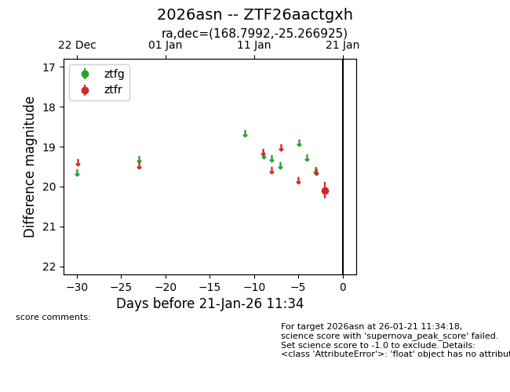
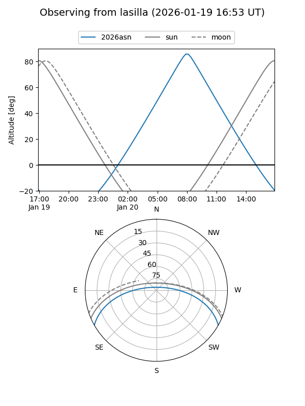
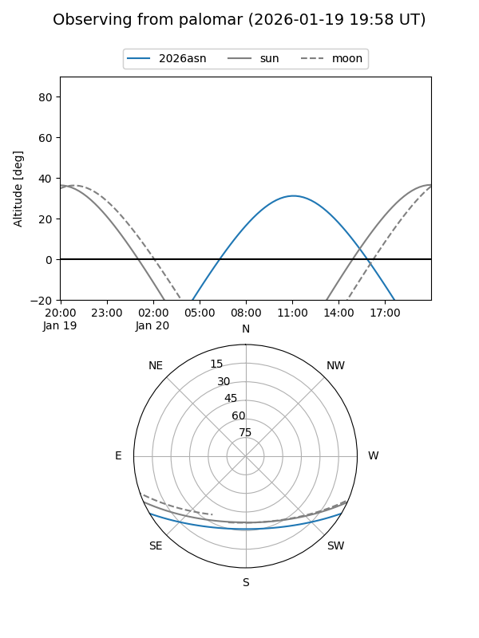

2026asn
Target 2026asn at 2026-01-19 20:06
Aliases and brokers:
FINK: link
Lasair: link
ALeRCE: link
TNS: link
YSE: link
alt names
ZTF26aactgxh (ztf,fink_ztf)
2026asn (tns,yse)
Coordinates:
equatorial (ra, dec) = 168.7992,-25.26693
equatorial (HMS+DMS) = 11:15:11.81,-25:16:00.93
galactic (l, b) = (276.9462,+32.70303)
Flags:
Photometry:
last ztfr=20.09
1 ztfr detections
Lightcurve

Visibility


Additional plots